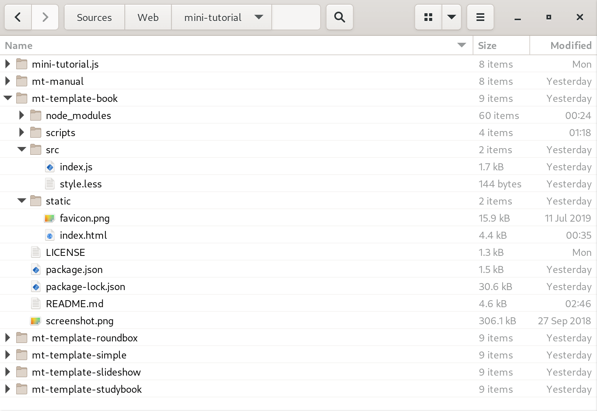

Basically your are looking at it right now. mini-tutorial.js
is a clean and simple JavaScript application (consisting of only one class and some
style sheets), which allows you to create beautiful HTML-based documentation and tutorials
without much effort. All content is contained in a single HTML file using plain
and simple HTML markup.
The JavaScript part renders a simple Table of Contents, a few navigation links
at the bottom and makes sure that only one chapter at a time is visible. This
allows the reader to read the document like a simple book without much scrolling.
Also this makes larger documents appear not as overwhelming and be easier to
navigate.
Originally I created mini-tutorial.js for
[my lectures at DHBW Karlsruhe](https://www.wpvs.de)
when I needed a simple template to create online tutorials for my students.
In that regard it is the little brother of
[lecture-slides.js](https://github.com/DennisSchulmeister/lecture-slides.js)
my HTML slideshow maker with a twist. As such both projects are compatible
to a certain extend and share a similar look and feel.
Of course you can easily navigate between chapters with your mouse or the
touchscreen on mobile devices. But if you are like me you will also
appreciate the simple keyboard shortcuts:
* Arrow Left: Previous Chapter
* Arrow Right, ENTER: Next Chapter
On touch devices you can also swipe left and right.
The easiest way to start a new document is to download one of the templates
and change its source code. While basically mini-tutorial.js
is just a simple JavaScript library that needs to be integrated into a surrounding
HTML document, the templates provide a ready-to-use configuration consisting of …
* The right HTML structure to make the layout work
* The necessary JavaScript code to configure and start mini-tutorial.js
* The LESS preprocessor for custom styling
* All needed npm dependencies (though there are not many)
* [esbuild](https://esbuild.github.io/) as a bundler to develop and compile the document

The following files in the templates need to be changed:
* README.md: Can be deleted, if you don't need it
* LICENSE: Should be changed or deleted if needed
* static/index.html: The document content goes here
* src/index.js: Can be changed to configure
mini-tutorial.js and its plugins
* package.json: Some dependencies can be removed,
if not all pre-configured plugins are needed. Also it is a good idea to
change the project meta data here.
If needed, multiple HTML documents can be created by copying
static/index.html. Since all HTML files
are just static content, there is no limitation on how many
HTML files can be reside in the same prohect and how the content
of the static/ directory is organized.
The exact structure of the HTML document depends on the layout, that
is used to render the document. Most layouts (with exception to the
book layout) are using the following structure:
With the book layout, the body needs to be slightly changed
to move the table of contents to a sidebar. Also it makes
sense to structure the document with chapters and sub-chapters,
which is actually possible with all layouts.
In both case the main content resides on multiple sections
inside the main element. The header and the footer can be
adjusted at wish to provide always visible information like
the document title or a copyright notice.
Please note, that <h1>
and <h2> are used for
the document and chapter titles. If headings are needed inside the
text it is recommended to use <h3>
onwards.
A rather obscure feature is cloned sections. This allows to duplicate existing
sections without copying their HTML code. Say you have a section like this:
<section id="sec-safety" data-title="Safety Precautions">
Some very important notes here …
</section>
Then the exact same section can be placed at another location like this:
<section data-clone="#sec-safety"></section>
If the cloned section has no data-title attribute, the cloned
section will also have the same title as the original section.
Most content is just plain HTML. However, all layouts (ore more specificaly
the file themes/common.css) provide some often-needed
styling and utilities.
Auto-numbered figures
<figure>
<img src="image-file.png" class="border" />
<figcaption>Caption Text</figcaption>
</figure>
Me after a long night of coding …
(Image Source: Pixabay: Free-Photos)
The "Fig." prefix can simply be changed in a local stylesheet like this.
:root {
--figure-short-code: 'Abb. ';
}
Big skip between paragraphs
If a big skip akin to the LaTeX command \bigskip is needed,
the css class skip can be used:
Technical documents often need to describe keyboard codes,
file names, commands or an output the user sees on screen.
These can be marked up like this:
Edit file <span class="fn">file name</span>. <br />
Enter command <span class="cmd">command</span> <br />
The screen will show <span class="scr">some output</span> <br />
Then press <kbd>META</kbd>+<kbd>Q</kbd> to quit.
The result will then be:
Edit file file name.
Enter command command
The screen will show some output
Then press META+Q to quit.
If the plugin ls-plugin-markdown is loaded,
markdown syntax can be used in any HTML block element with the class
markdown or inline element with the class md:
<section data-title="Markdown Example" class="markdown">
### A Hading, Paragraph and a List
This is a simple paragraph of text. Next will follow an
unordered list.
* List item 1
* List item 2
* List item 3
</section>
Markdown rendering is done by the markdown-it
library. CSS classes can be added via curly braces like this:
This is a simple paragraph. {danger}
Sometimes using custom HTML elements (see next chapter) doesn't work
well inside a markdown rendered element. In that case the custom
element must not be used inside an HTML element with the classes
markdown or md.
Syntax Highlighting
The plugin ls-plugin-highlight.js
provides custom HTML elements for syntax highlighed source
code. Syntax highlighted code blocks can then be inserted
like this:
<source-code language="python">
if __name__ == "__main__":
print("Hello, Python!")
</source-code>
For inline usage the element <src-code>
can be used similarily:
<p>
The main logic resides in the
<src-code language="python">main()</src-code>
function.
</p>
Bootstrap Shorthands
If Bootstrap is used, the plugin ls-plugin-extra-tags
greatly reduces the pain in defining grid layouts, carousels, accordions and
many more. See the following examples and their source code below.
export function determineLinebreaks(text) {
if (text.includes("\r\n")) return "\r\n";
else if (text.includes("\n")) return "\n";
else if (text.includes("\r")) return "\r";
else return "";
}
export function removeLeadingLinebreaks(text) {
let linebreak = determineLinebreaks(text);
if (linebreak === "") return text;
while (text.startsWith(linebreak)) {
text = text.slice(linebreak.length);
}
return text;
}
@dschulmeis/mini-tutorial.js
@dschulmeis/lecture-slides.js
@dschulmeis/ls-plugin-extra-tags
@dschulmeis/ls-plugin-highlight.js
@dschulmeis/ls-markdown
<lsx-tab-pages>
<lsx-tab-page title="Determine Line Breaks">
<source-code language="javascript">
export function determineLinebreaks(text) {
if (text.includes("\r\n")) return "\r\n";
else if (text.includes("\n")) return "\n";
else if (text.includes("\r")) return "\r";
else return "";
}
</source-code>
</lsx-tab-page>
<lsx-tab-page title="Remove Leading Line Breaks">
<source-code language="javascript">
export function removeLeadingLinebreaks(text) {
let linebreak = determineLinebreaks(text);
if (linebreak === "") return text;
while (text.startsWith(linebreak)) {
text = text.slice(linebreak.length);
}
return text;
}
</source-code>
</lsx-tab-page>
</lsx-tab-pages>
<lsx-ul emoji="🐻">
<li>@dschulmeis/mini-tutorial.js</li>
<li>@dschulmeis/lecture-slides.js</li>
<li>@dschulmeis/ls-plugin-extra-tags</li>
<li>@dschulmeis/ls-plugin-highlight.js</li>
<li>@dschulmeis/ls-markdown</li>
</lsx-ul>
Technicaly speaking, each document is a single page app that executes the
JavaScript file `src/index.js`. There the `mini-tutorial.js` main object is
created and its `start()` method is called:
import "bootstrap/dist/css/bootstrap.min.css";
import "bootstrap/dist/js/bootstrap.bundle.min.js";
import MiniTutorial from "@dschulmeis/mini-tutorial.js";
import "@dschulmeis/mini-tutorial.js/themes/book.css";
// Bug in esbuild-plugin-less and others: Module paths are not recognized!
import "../node_modules/@dschulmeis/mini-tutorial.js/themes/bootstrap.less";
import LS_Plugin_Markdown from "@dschulmeis/ls-plugin-markdown";
import LS_Plugin_HighlightJS from "@dschulmeis/ls-plugin-highlight.js";
import HLJS_Language_JSON from "highlight.js/lib/languages/json";
import "highlight.js/styles/atom-one-light.css";
import "./style.less";
window.addEventListener("load", () => {
let mt = new MiniTutorial({
download: [
// Add HTML files here if you want to split the document.
],
plugins: [
new LS_Plugin_Markdown(),
new LS_Plugin_ExtraTags(),
new LS_Plugin_HighlightJS({
languages: {
javascript: HLJS_Language_JS,
},
highlightAll: true,
}),
],
});
mt.start();
});
Here are a few notes to keep in mind when making changes to this file:
* If Bootstrap is used always import it before
mini-tutorial.js to avoid styling conflicts.
* After the mini-tutorial.js main class always
import one of the contained stylesheets, if you want to use the pre-defined
layouts.
* If you want to roll your own stylesheet with custom layout, you still
might want to import themes/common.css to remain
somewhat compatible with the built-in layouts.
* After the layout stylesheet you might want to import
themes/bootstrap.less if you are using Bootstrap
to provide a more modern look. This requires a bundler that can transform
LESS to CSS code, which is already set up in the templates.
* Use the file src/style.less for custom styling as
you wish.
* Regarding plugins, the same plugins as for lecture-slides.js
can be used to provide Markdown syntax and custom HTML elements for source code
syntax highlighting or often-needed Bootstrap elements.
* When using both plugins, loading ls-plugin-markdown
before ls-plugin-extra-tags may help if some
<lsx-…> elements inside a markdown text are not rendered
correctly. If that doesn't help, move the <lsx-…> elements
out of the markdown text.